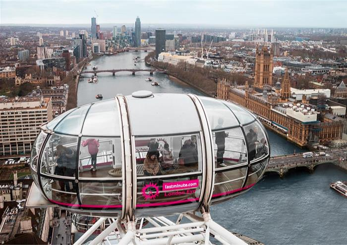
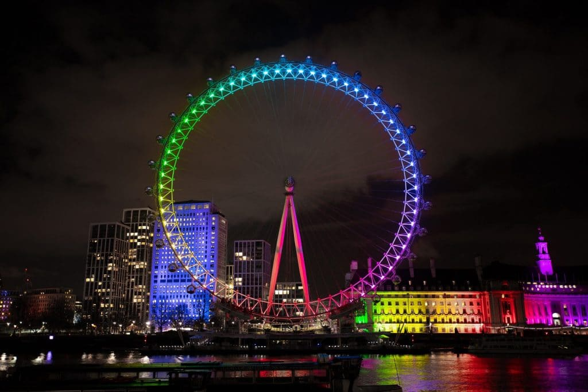
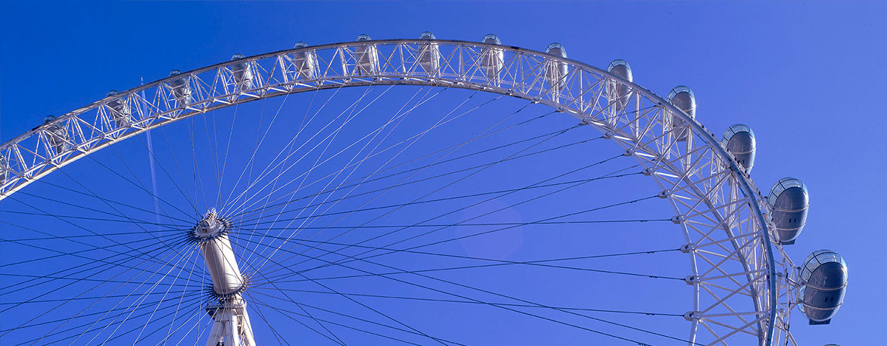

Startpagina
Galerij
Informatie
1 / 3

Helemaal bovenaan
2 / 3

Regenboog kleurend rad
3 / 3

Capsule foto
❮
❯
Si vous lisez ceci, c'est que votre navigateur ne prend pas en charge l'élément audio.